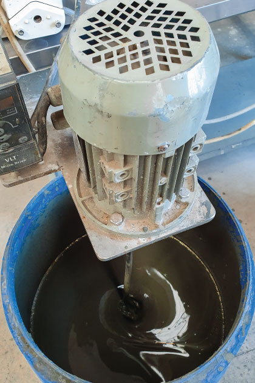
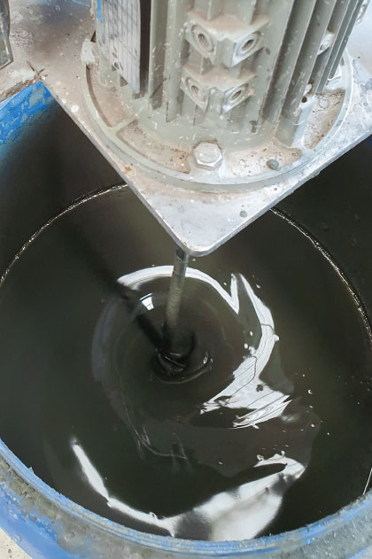
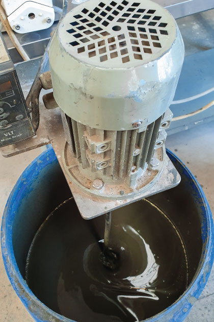
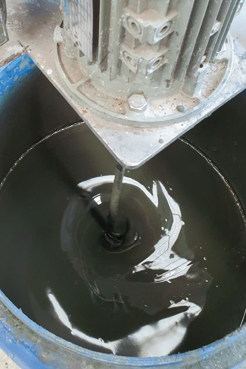
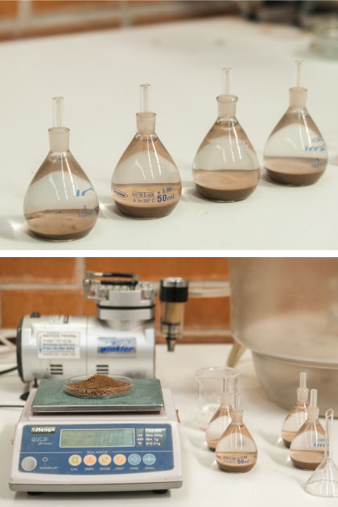
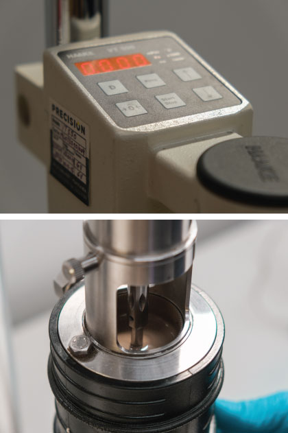

Preparación de muestra
 




Caracterización física de la muestra
- Hasta tamiz #500 (25μm)
- Granulometría láser, bajo tamiz #500
- Gravedad específica de sólidos
- Límites de consistencia (LL, LP y LC)


Caracterización reológica
-
Yield stress:
corresponde al esfuerzo requerido para que el material comience a fluir Densidad:
Este parámetro expresa la resistencia del material a fluir. Generalmente los relaves presentan un comportamiento plástico por lo que puede aplicarse la modelación de Binghan en donde la pendiente de la recta asociada corresponde a la viscosidad

Pendiente de depositación
Este ensayo permite determinar la pendiente que alcanzará una pulpa a un cierto % de sólidos después de ser depositada y escurrir hasta detenerse.
Sedimentación estática y dinámica
Estas pruebas tienen como objetivo obtener los parámetros de sedimentación para el dimensionamiento de espesadores convencionales, alta capacidad, alta densidad y pasta.
Límites de contracción:
Estas pruebas tienen como objetivo obtener los parámetros de sedimentación para el dimensionamiento de espesadores convencionales, alta capacidad, alta densidad y pasta.